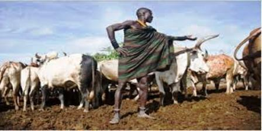

MY POKOT CULTURE
WHAT TO KNOW ABOUT POKOTS
Who are the Pokot tribesmen in Kenya?The Pokot people commonly spelled Pokoot, live in the West Pokot District and Baringo District of Kenya and in Pokot District of eastern Karamoja region in Uganda. Kenyas 2009 census puts the total number of Pokot speakers at about 620,000 in Kenya. In addition, there are close to 100,000 Pokot speakers in Uganda. According to the census, there were 133,000 Pokot speakers in Baringo county and close to 500,000 in West Pokot county. A fair estimate indicates that there are close to 700,000 Pokot speakers in Kenya and Uganda.

Based on areal and cultural differences, the Pokot people can be divided into two groups (Rottland 1982): the Hill Pokot and the Plains Pokot .The Hill Pokot live in the rainy highlands in the west and in the central south of the Pokot area and are both farmers and pastoralists. The Plains Pokot live in the dry and infertile plains, herding cows, goats and sheep. Many Pokot people from the present eastern part of the Pokot area claim that they come from the hilly areas of northern Cherengani(Bollig 1990). Halfway through the nineteenth century, they seem to have expanded their territory rapidly into the lowlands of the Kenyan Rift Valley, mainly at the expense of the Laikipia Maasai people. The Pokoot were once considered part of the Kalenjin people who were highland Nilotic people who originated in southern Ethiopia and migrated southward into Kenya as early as 2,000 years ago. Though the Pokoot consider themselves to be one people, they are basically divided into two sub-groups based on livelihood.
About half of the Pokoot are semi-nomadic, semi-pastoralists who live in the lowlands west and north of Kapenguria and throughout Kacheliba Division and Nginyang Division, Baringo District. These people herd cattle, sheep, and goats and live off the products of their stock. The other half of the Pokoot are agriculturalists who live anywhere conditions allow farming. The homestead is the social center for the Pokoot. Here a man lives with his wives, each having their own hut. All members of the family live here and the stock is corralled here at night. The man of the family rules the homestead, telling the others what duties they are to perform.